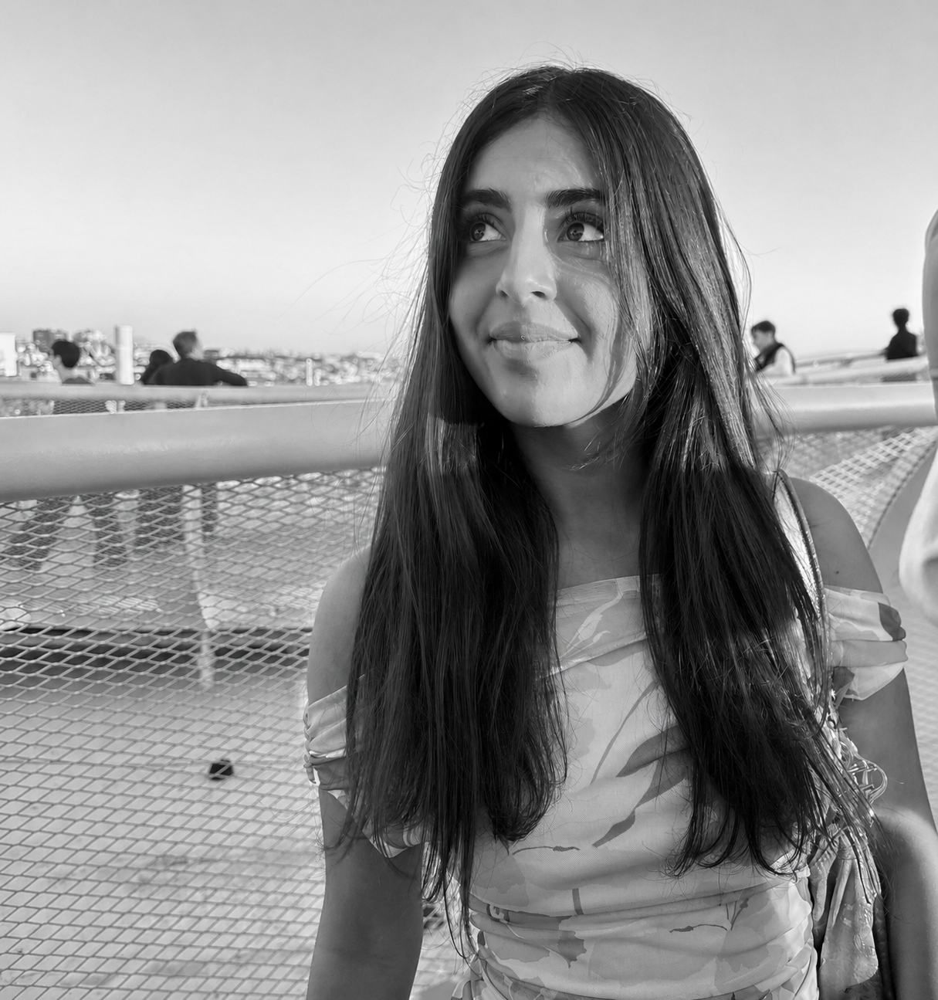

Hej, jeg hedder Dana og studerer Multimediedesign. Jeg interesserer mig især for webdesign og grafisk design og motiveres af at skabe digitale løsninger med fokus på både æstetik og brugeroplevelse. På studiet har jeg arbejdet med HTML, CSS, designprocesser og udvikling af responsive websites.

2020-2023: Frederikssund Gymnasium, STX
2026-2028:Multimediedesign, EK
På 1. semester af Multimediedesign har jeg arbejdet med både design og udvikling af digitale løsninger. Jeg har lært at opbygge websites i HTML og CSS med fokus på struktur, responsivt design og Mobile First. Derudover har jeg arbejdet med designprocesser gennem moodboards, styletiles og wireframes samt brugertests for at træffe designvalg med udgangspunkt i brugeroplevelsen. Gennem semesteret har jeg udviklet mine kompetencer inden for både kreativ problemløsning og teknisk forståelse.